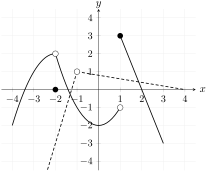

Recall that in Activity 1.1.10 we used numerical methods and table of values to find the limit of a relatively simple degree three polynomial at a point. This was inefficient, “there’s gotta be a better way!”
Activity1.2.1.
Given \(f(x)=3x^2-\dfrac{1}{2}x+4\text{,}\) evaluate \(f(2)\) and approximate \(\ds \lim_{x\to 2}f(x)\) numerically (or graphically). What do you think is more likely?
Use the limit laws to determine the following limits, if they exist. The function \(f(x)\) is graphed as the solid line, and \(g(x)\) is graphed as the dashed line.

Figure1.2.5.The function \(f(x)\) is graphed as the solid line, and \(g(x)\) is graphed as the dashed line.
(a)
\(\ds \lim_{x\to 1} [f(x)]\)
(b)
\(\ds \lim_{x\to -1} [g(x)]\)
(c)
\(\ds \lim_{x\to 2} [3f(x)]\)
(d)
\(\ds \lim_{x\to -1}\left[-2f(x)+3g(x)\right]\)
(e)
\(\ds \lim_{x\to -1}\left[f(x)g(x)\right]\)
(f)
(Challenge) \(\ds \lim_{x \to -1^-} f(g(x))\text{.}\) Take a careful look at Theorem 1.2.4!
Activity1.2.5.
Given \(p(x) = -3x^2 - 5x+7\text{,}\) which of the following limit laws would use to determine \(\ds \lim_{x\to 2} p(x)\text{?}\) Choose all that apply.
Sum/Difference Rule
Constant Multiple Law
Multiplication Law
Constant Law
Exponent Law
Constant Law
Division Law
Theorem1.2.6.Direct Substitution Property.
If \(f\) is a function with \(a\) in the domain of \(f\text{,}\) then
Given \(p(x)=-3x^2-5x+7\) and \(q(x)=x^4-x^2+3\text{,}\) which of the following describes the most efficient way to determine \(\ds \lim_{x \to -1} \dfrac{p(x)}{q(x)}\text{?}\)
Sum/difference, Constant Multiple, and Multiplication Laws
Exponent, Sum/difference, Constant Multiple, and Constant Laws
Division and Root Laws
Activity1.2.7.
Consider taking the limit of a rational function \(\dfrac{p(x)}{q(x)}\) as \(x \to c\text{.}\) If \(q(c)=0\text{,}\) is it possible for \(\ds\lim_{x \to c}\dfrac{p(x)}{q(x)} \) to equal a number?
No, because \(\dfrac{p(x)}{q(x)}\) is not defined at \(x=c\) since \(q(c)=0\)
Yes, because if you graph \(f(x)=\dfrac{x^2-1}{x-1}\text{,}\) the value \(f(1)\) is not defined, but the graph shows that the limit of \(f(x)\) does exist as \(x \to 1\)
No, because if you graph \(g(x)=\dfrac{x^2+1}{x-1}\text{,}\) the value \(g(1)\) is not defined and the graph shows that the limit of \(\displaystyle\lim_{x \to c}g(x)\) does not exist
\(\ds \lim_{x\to 0} (f(x)/g(x))\) cannot be determined
\(\ds \lim_{x\to 0} (f(x)/g(x))\) does not exist
Remark1.2.7.
When we compute the limit of a ratio where both the numerator and denominator have limit equal to zero, we have to compute the value of a \(\dfrac{0}{0}\) indeterminate form. The value of an indeteminate form can be any real number or even infinity or not existent, we just do not know yet! We can usually determine the value of an indeterminate form using some algebraic manipulations of the expression given.
Definition1.2.8.
A function \(f(x)\) has a hole at \(x=c\) if \(f(c)\) does not exist but \(\ds \lim_{x \to c} f(x)\) does exist and is equal to a real number.
Activity1.2.9.
Consider the function \(f(x) = \dfrac{(x-1)(x^2-4)}{(x+1)(x-2)\sin (x)}\)
(a)
Which of the following are locations of holes for \(f(x)\text{?}\) Select all that apply
\(\displaystyle x=1\)
\(\displaystyle x=-1\)
\(\displaystyle x=2\)
\(\displaystyle x=-2\)
\(\displaystyle x=2\)
There are no holes
(b)
Are there any holes that you didn’t find in part (a)? What are they?
(c)
Definition 1.2.8 says that we should be able to find the limit of a function at a hole, but that the function is not defined at that input. For each hole you identified in part (a), determine the limit of \(f(x)\) as \(x\) approaches the hole.
Activity1.2.10.
Determine the following limits and explain your reasoning. Use Definition 1.2.8 to determine if (and where) the function has a hole.